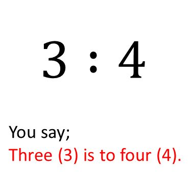

Indicators: B7.1.4.1.1
Find ratio and use ratio language to describe relationship between two quantities.
A ratio is a comparison between two (2) quantities, and it is often expressed as a fraction, eg. \(\frac{3}{4}\) or a decimal.
For instance, a ratio of 3:4 or \(\frac{3}{4}\) means that for every three (3) units of one quantity, there are 4 units of another quantity.
Ratios are often used when it comes to sharing.
Assuming your mother brought home 15 toffees to be shared between you and your brother. Your brother, who is 2 times older than you, could say that once he is older than you, he needs to get more share of the toffees than you.
Your mother could decide to share the toffees according to your ages. Since your brother is twice (2 times) your age, every time your mother gives you one of the toffees, she will give your brother 2.
This method of sharing will continue until the toffees are exhausted.
Mathematically, we can say that, your mother shared the toffees in the ratio 1 is to 2 (that is, 1:2).
Let's practice some questions to get more understanding of ratios.
Example 1
What is the ratio of boys to girls, if there are 60 boys and 120 girls in a school?
Solution
Number of boys \(= 60 \)
Number of girls \(= 120\)
\(\therefore\) Ratio of boys to girls \(\implies 60 : 120 \ or \ \frac{60}{120} \)
\(\implies\) boys : girls \(= 1:2 \ or \ \frac{1}{2}\)
\(\therefore\) The ratio of boys to girls is \(1:2\)
Example 2
Yaw is 6 years old and Kofi is 10 years old. What is the ratio of Yaw's age to Kofi's age?
Solution
Yaw's age \(= 6\)
Kofi's age \(= 10\)
\(\therefore\) Ratio of Yaw's age to Kofi's age
\(\implies\) Yaw : Kofi \(= 6:10\)
\(\hspace{4.5cm}\) \(= 3 : 5 \ or \ \frac{3}{5} \)
\(\therefore\) The ratio of Yaw's age to Kofi's age is \(3:5\)
We can also use ratios to determine the value of an unknown quantity when one quantity is given.
Consider the examples below:
Example 3
Alhassan is twice as old as his son Musah. If Musah is 25 years of age, how old is his father, Alhassan?
Solution
Musah's ratio \(= 1\)
\(\therefore\) Alhassan's ratio \(= 2\)
let Alhassan's age \(= x\)
\(\implies 1:2 = 25 : x\)
\(\hspace{2.5cm} \frac{1}{2} = \frac{25}{x}\)
\(\hspace{1.4cm}1 \times x = 2 \times 25\) (Cross multiplication)
\(\hspace{2.7cm}x = 50\)
\(\therefore\) Alhassan is 50 years of age.
Sometimes, we need to convert two (2) quantities who have different units to a common unit in order to find their ratios.
Consider the examples below:
Example 4
In a competition, Kwame run 4km and Joe run 600m. What is the ratio of Kwame's distance to Joe's distance?
Solution
We need to first convert one of the distances, so they are both expressed in the same unit. Let's convert the bigger unit (kilometer) to the smaller unit (meter).
\(1 km = 1000 m\)
\(\therefore 4 km = \frac{4 km}{1 km} \times 1000 m\) (If more, less divide)
\(\hspace{2.2cm} = 4 \times 1000 m\)
\(\hspace{2.2cm}= 4000 m\)
\(\therefore\) Kwame's distance is \(4000 m\).
Ratio of their distances:
\(\implies\)Kwame's distance : Joe's distance
\(\hspace{4.5cm} 4000 m : 600 m\)
\(\hspace{5.8cm} 40 : 6 \) (Breaking it down)
\(\hspace{5.8cm} 20 : 3 \)
\(\therefore\) Ratio of Kwame's distance to Joe's distance is \(20:3\).
Example 5
Express 80cm to 40m as a ratio in its lowest form.
Solution
Like we did in the previous example, let's convert the bigger unit to the smaller unit.
\(1 m = 100 cm\)
\(\therefore 40m = \frac{40m}{1m} \times 100cm\) (If more, less divide)
\(\hspace{2.2cm} = 40 \times 100cm\)
\(\hspace{2.2cm} = 4000cm\)
This implies;
\(80cm : 40m = 80cm : 4000cm\)
\(\hspace{3.7cm} = 80:4000\)
\(\hspace{3.7cm} = 8:400\) (breaking it down)
\(\hspace{3.7cm} = \frac{8}{400}\) (Use 8 to divide through)
\(\hspace{3.7cm} = \frac{1}{50}\)
\(\hspace{3.7cm} = 1:50\) (Change it back to ratios)
\(\therefore\) the ratio of 80cm to 40m is \(1:50\)
Also, we may sometimes wish to express one quantity in terms of another quantity before we use ratios to find their values. Example 3 above can be solved differently using this idea.
Solution
let Musah's age \(= x\)
\(\implies\) Alhassan's age \(= 2x\)
\(\therefore\) If \(x = 25\)
It implies \(2x = 2 \times x\)
\(\hspace{3.8cm} = 2 \times (25)\)
\(\hspace{3.8cm} = 50\)
\(\therefore\) Alhassan is 50 years of age.
Try Work
Exercise 1:
Convert the following into common units and express them in their simpliest
form.
1. \(4kg:800g\)
2. \(3000m : 5 km\)
3. \(30minutes:2hours\)
4. \(250ml:1.8l\)
5. GH₵ \(4\) : GH 4p
Exercise 2:
Solve the questions below:
1. What is the ratio of boys to girls in a school, if there are 80 boys
among 250 total students in the school?
2. Ayitey bought 50 stickers and realized only 15 had the colour he
wanted. What is the ratio of the stickers he liked to the ones he did not want?
3. The length of a square is 6cm. What is the ratio of its perimeter
to the area?
4. Kofi and Ama shared an amount of money in the ratio 3:2 respectively.
If Kofi had GH₵60,000.00, how much was shared?
5. Araba sold her party dress for GH₵ 700.00. If Araba bought the dress
at GH₵500.00, what is the ratio of her profit to her selling price?
Exercise 3:
Solve the questions below:
1. The ratio of boys to girls in a school is 9:11. If there are 400 pupils in the school,
how many boys are there?
2. 200 bottles of equal capacity hold 350 litres of water. How much water does each bottle
hold
3. The scale of a map is 1:100,000. What is the distance (in kilometres) between
two towns 4cm apart on the map?
4. If 50 oranges cost GH₵ 2,500.00, how many oranges can be bought GH₵ 15,000.00?
5. The sum of ages of Kwaku and Kojo is 30 years. Kwaku is 4 years older than Kojo.
How old is Kojo?
Exercise 4:
Solve the questions below:
1. If $ 1.00 = GH₵ 15, what is the cedi equivalence of a mobile phone that costs
$95.50?
2. An amount of money is shared between Kofi and Ama in the ratio 3:5.
If Ama received GH₵ 4,650.00, what was Kofi's share?
3. Kwame, Atsu and Kojo shared a profit of ₵50,000.00 in the ratio 1:4:3 respectively.
How much did Atsu get?
4. The sum of the ages of two brothers Kofi and Kweku is 35. Kofi's age is two-thirds
Kweku's age. Find their ages.
5. Kojo, Ebo and Ama shared ₵14,000.00 among themselves. Kojo had
twice as much as Ebo, and Ebo also had twice as much as Ama. How much did Ebo get?
Indicators: B7.1.4.1.2
Use the concept of a unit rate \(\frac{a}{b}\) associated with a ratio a:b with b ≠ 0, and use rate language in the context of a ratio relationship.
In our previous lesson, we learnt that ratio can be written as fractions. In this lesson we will expand on the idea and learn about how we can write two quantities as ratios or rates of each other.
--Remember, that for a fraction to be defined, the denominator should not be equal to zero (0). That is for \(\frac{a}{b}\) to be defined b should not be equal to 0 (\(b \ne 0\)).
A fraction whose denominator is equal to zero is said to be undefined.
\[\frac{2}{0} = undefined\]
Have you ever wondered how many steps it take to walk from your house to your school, or the time it takes for you to journey from home to school?
We can express those quantities as ratios or rate of each other.
For instance,
Indicators: B7.1.4.1.3
Make tables of equivalent ratios (written as common fractions) relating quantities that are proportional
Kindly check back later for the lesson on this topic, as our website is still in the process of being built. Thank you.
Indicators: B7.1.4.1.4
B7.1.4.1.4 Use the proportional reasoning to find missing values in the tables, and plot pairs of values on the coordinate plane.
Kindly check back later for the lesson on this topic, as our website is still in the process of being built. Thank you.
Indicators: B7.1.4.1.5
Find a percent of a quantity as a rate per 100 (e.g. 30% of a quantity means 𝟑𝟑𝟑𝟑 𝟏𝟏𝟏𝟏𝟏𝟏 times the quantity).
Kindly check back later for the lesson on this topic, as our website is still in the process of being built. Thank you.